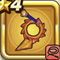

コドラウィップ
攻略班 5.5点 / ドラゴン打ちねむり打ちしんくうげり
くわしい特徴
【レベル別習得スキル】 Lv1ドラゴン打ち（消費MP：5）ドラゴン系に威力200%それ以外の系統は130%の体技ダメージを与える Lv8ねむり打ち（消費MP：12）催眠をかけ敵全体に威力120%の体技ダメージを与えたまに眠りをさそう Lv20しんくうげり（消費MP：18）大気を切り裂く蹴りを放ち敵全体にバギ属性の150%の体技ダメージを与える Lv28ドラゴン系へのダメージ+5% Lv36攻撃時+2%の確率で混乱を与える Lv40攻撃力+8 【限界突破スキル】 1凸スキルの斬撃・体技ダメージ+3% 2凸スキルの斬撃・体技ダメージ+3% 3凸スキルの斬撃・体技ダメージ+3% 4凸スキルの斬撃・体技ダメージ+3%